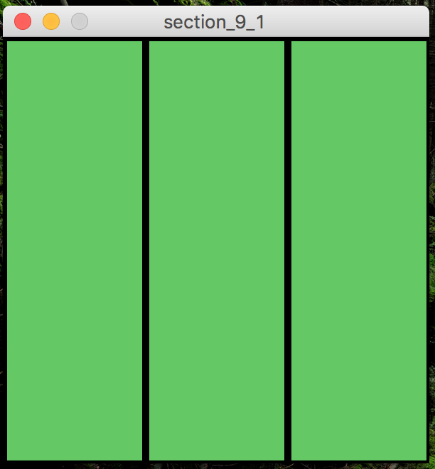
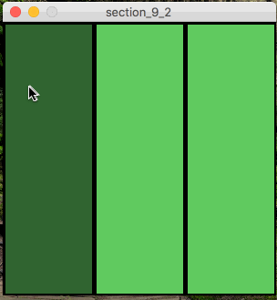
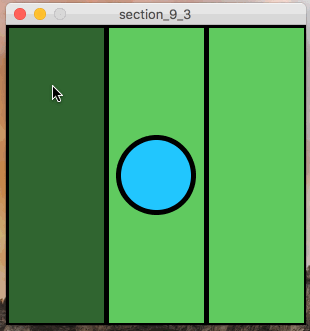
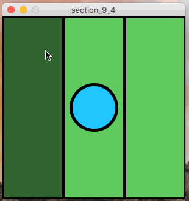
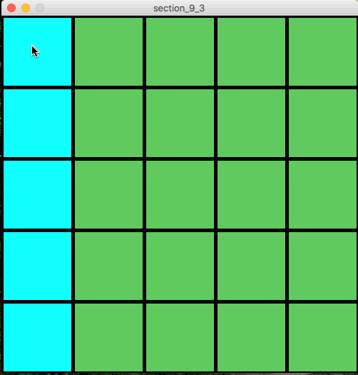
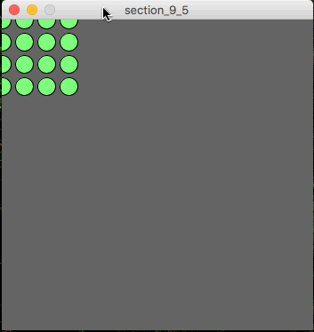

CSc 101: Section 9 – Program Style, plus combining if and for
In this section you will be writing some programs that will (hopefully) help you be better-prepared to work on the assignment this week.
You will need to respond to some key presses.
However, you should use the keyPressed function rather than the keyPressed variable.
You section leader should be able to explain the different to you!
Turn in at least 4 of the problems to the D2L dropbox.
Problem 1
|

|
Start by just creating a simpel 300x300 pixel canvas that resembles the one pictured.
You can easily accomplish this with a few shapes.
|
Problem 2
|

|
Using if-statements, modify the program from the last problem so that the rectangle
becomes darker when the mouse os over-top of it.
|
Problem 3
|

|
Next, modify the code from the previous problem so that a circle is also drawn on the canvas.
The user should be able to move the circle left and right using the 'j' and 'l' keys, as shown in the animation to the left.
You should use the keyPressed function (not an if-statement) to get this working.
|
Problem 4
|

|
In this problem, you'll build off of the last one.
Modify the code so that the circle cannot go out-of-bounds, even if the user tries to make it by repeatedly pressing the 'j' or 'l' keys.
|
Problem 5
|

|
In this problem, you'll draw a 5x5 grid of creen squares, using a nested for-loop.
Once you have the grid drawing on its own, modify the code so that the column that the
mouse is currently in turns teal instead of green, as is shown below.
You'll need to use if-statements inside of your for loops to do this.
|
Problem 6

|
In this problem, you'll build off of the last one.
In addition to highlighting the column that the mouse is currently in with a teal color,
You will also highlight the current row with red.
Notice how the red and teal columns move along with the mouse.
Also note that the tile at which the row and column intersect is red, not teal.
|
Problem 7
|

|
In this problem, you will draw a 5x5 grid of small circles *using nested for-loops*.
However, you should make the grid follow the mouse around the screen.
You can do this by using the `mouseX` and `mouseY` variables (plus some simple math) to
initialize the loop variable, and set the loop limit.
See the animation to the left.
|